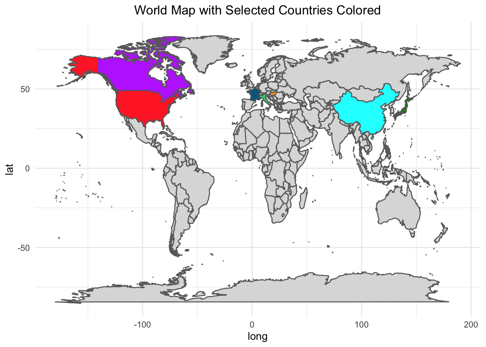
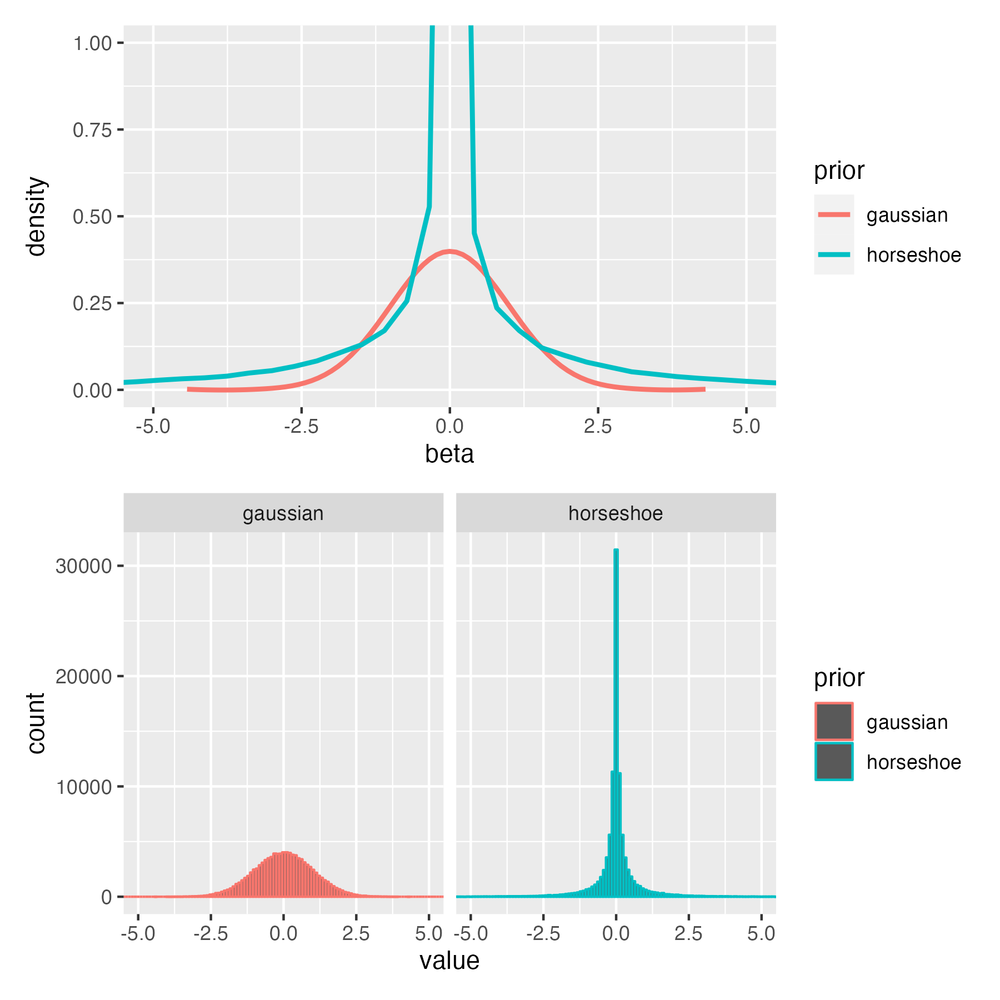
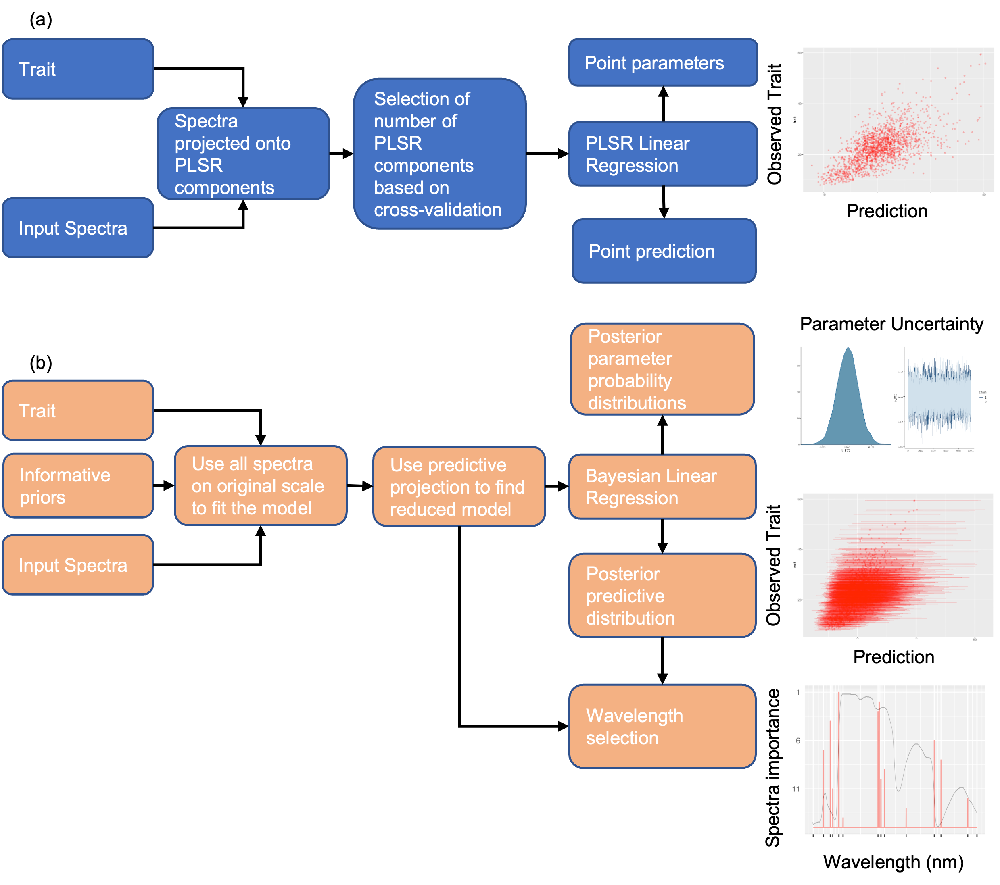

Beyond PLSR: Bayesian Brilliance in Hyperspectral Trait Estimation
Introduction
Foliar Functional traits are chemical (such as chlorophyll), physiological (such as photosynthetic rate) and structural (such as leaf area) features of a leaf which mediate ecosystem functioning and its response to perturbations by regulating the growth fitness of plants in diverse ecosystems (Serbin and Townsend (2020); Lavorel and Garnier (2002); Wright et al. (2005); Funk et al. (2017)).
In an ecosystem, foliar functional traits influence the resource allocation and reallocation of resources by a plant under diverse environmental conditions ( Reich (2014); Wang et al. (2020)) and affect the functional diversity driving ecosystem productivity ( Cadotte et al. (2009) )
Foliar traits’ significance in parameterizing terrestrial vegetation plays a crucial role in Earth System models, which, if not precisely characterized, introduces substantial uncertainty into climate change predictions ( Wullschleger et al. (2014); Friedlingstein et al. (2006) ).
PLSR methods have been the most successful method for predicting traits for spectra.
The upcoming SBG mission has PLSR method as one of the strong candidates for predicting traits
The PLSR approach to trait estimation does not provide uncertainty estimates which are crucial to understand how variable the predictions will be when applied to new study regions.
Another drawback of the PLSR approach is that it assumes a linear relationship between the traits and spectra. Though there have been a few applications of kernel based PLSR approaches for trait prediction (e.g. Arenas-Garcia and Camps-Valls (2008)) , the majority of the studies still use the standard PLSR assuming a linear relationship between the traits and spectra.
PLSR approaches also cannot account for the hierarchical structure that might exist in certain traits.
PLSR is challenged by the variability of the relationship between traits and spectra across species, functional types, and biomes. It will either a global function between the traits and spectra which ignores the across-group variability or else it is used to fit functions separately for different groups which might not be always be possible due to scarcity of sampled trait data.
The National Academy of Sciences 2017 Decadal Survey specifically identifies the spatio-temporal distribution of plant functional traits as a crucial objective (E-1a).
It is not surprising that plant functional traits are identified as an Essential Biodiversity Variable (Pereira et al. (2013), Pettorelli et al. (2016)).
Study Area and Data
We use observations of three foliar traits: Carotenoid (\(\mu g/cm^{-2}\)), Nitrogen (\(mg/g\)) and Leaf Mass per Area (\(g/m^{-2}\)) paired with hyperspectral reflectance data from 400 nm to 2400 nm from publicly available Ecological Spectral Information System (EcoSIS) library (citation needed). The observation span a wide range of climatic and geographic range ( Figure 1 ) .
Methods
In this section, we first describe the Bayesian regression model used in predicting traits using hyperspectral data. We elucidate models both in the actual spectral space as well as dimensionally reduced orthogonal space (similar to PLSR). Formulating appropriate priors is essential for high dimensional (where number of input spectral bands is large) problems, therefore we also define the relevant priors used in the current work. To enable computationally efficient prediction on new datasets and select wavelengths which best approximate the predictive capabilities of the above models, we transform both model to a simpler model on the original spectral space requiring only a subset of input spectra using projective inference (Juho Piironen, Markus Paasiniemi, and Aki Vehtari 2020). Notationally, we denote a scalar with a lower case letter and a vector with bold lower case letter. Superscript \(T\) refers to transpose.
Data Processing
We downloaded and processed all spectra and trait data from EcoSIS so that they have the same units across datasets.
The workflow for downloading and processing the data can be reproduced by following the links to the Github page given in Appendix.
Bayesian Regression model-Original hyperspectral space
Let the trait to be predicted be defined as a random variable \(y\). For an \(i^{th}\) observation, let the measured trait value be defined as \(y_i\) and the corresponding input (intercept plus) hyperspectral wavelength be defined as the vector \(\boldsymbol{x_i} = (1, x_{i,400}, x_{i,401}, ..., x_{i,2399}, x_{i,2400})\). We assume that \(y_i\) is a linear function of \(\boldsymbol{x}\) such that:
\[ y_i = \boldsymbol{\beta}^T \boldsymbol{x_i} + \epsilon_i, \; \epsilon \sim N(0, \sigma^2), \; i = 1,..., n \tag{1}\]
where \(n\) is the number of observations.
Here the length of \(x_i\) i.e. intercept + the number of input wavelengths (400 nm - 2400 nm) is \(p = 2002\). \(\boldsymbol{\beta}\) denotes the corresponding regression coefficients for \(\boldsymbol{x_i}\), and \(\sigma^2\) is the noise variance. Let the training data for the regression model i.e. the \(n\) observations of both the trait and spectra be denoted by \(\mathcal{D}\).
Formulating priors
An important component of the Bayesian approach is to formulate appropriate priors for the parameter vector \(\boldsymbol{\theta} :=(\boldsymbol{\beta}, \sigma^{2})\) used in the model.
Since the dimension of \(\boldsymbol{\beta}\) (2002) is large and a functional trait is typically sensitive to a small subset of the wavelengths, using traditionally used priors for \(\boldsymbol{\beta}\) (such as normally distributed priors) can lead to over-fitting of the Bayesian model.
This is especially true when the number of observations in $\mathcal{D}$ is less than $p = 2002$.
Since, a given trait is sensitive to a small number of wavelengths, we need a prior distribution which shrinks the $\beta$ coefficients of the non-important wavelengths to zero while letting the regression coefficients of the important wavelengths escape this shrinkage.
Such a prior distribution should therefore assign a high probability density at zero while also have heavy-tail (which allows the modeling of large values of $\beta$) fo important wavelengths.
To achieve this, we use a special prior distribution for \(\beta_j\) called the regularized horseshoe prior (Piironen and Vehtari 2017).
The regularized horseshoe prior belongs to a class of priors called shrinkage or sparsifiying priors which shrink \(\beta\) coefficients of the non-important wavelengths to zero and also have heavy-tails. For \(j^{th}\) regresssion coefficient \(\beta_j\), the regularized horsehoe prior is defined as:
\[ \begin{aligned} & \beta_j|\tilde{\lambda_j}, \tau \sim N(0, \tau^2 \hat{\lambda_j}^2), \; \tilde{\lambda_j^2} = \frac{c^2 \lambda_j^2}{c^2 + \tau^2 \lambda_j^2} \\ & \lambda_j \sim C^+(0, 1) \text{for } j = 1, ..., D \\ & c^2 \sim IG(\nu /2, \nu s^2/2) \\ & \tau^2 \sim C^+(0, \tau_0^2), \; \tau_0^2 = \frac{p_0}{p - p_0} \sigma \\ \end{aligned} \tag{2}\]
where \(C^+\) is a standard half-Cauchy distribution on the positive reals, IG is the inverse-Gamma distribution and \(p_0\) is our prior crude guess on how many non-zero coefficients are there for the model .
For our analysis, we set \(\frac{p_0}{D-p_0}\) as 0.05 for all the traits, denoting our a-priori guess that around 100 wavelengths are important for predicting a particular trait.
We fix \(\nu = 4\) and \(s = 2\) following (Piironen and Vehtari 2017).
The regularized horseshoe is an extension of the horseshoe prior (Carvalho, Polson, and Scott 2010) which has been widely used in high-dimensional regression.
Similar to the horseshoe prior, the \(\tau\) parameter in regularized horseshoe prior drives all regression coefficients to zero.
The thick Cauchy-tails for \(\lambda_j\) allow some of the regression coefficients (of important wavelengths) to escape this shrinkage towards zero.
The regularized horsehoe has an extra parameter \(c\) which better penalizes the non-shrinkage coefficients (i.e. the regression coefficients that are not equal to zero).
This helps if the regression coefficients are weakly identified and also improves the sampling robustness during posterior parameter inference using Markov Chain Monte Carlo (MCMC) methods.
Figure 2 gives the comparison between the regularized horseshoe prior and the Gaussian prior by simulating 500 samples for a regression coefficient $\beta_j$ following Equation 2 and from a Gaussian distribution with mean 0 and standard deviation 0.05.
The horseshoe prior assigns a significantly higher probability at zero leading to better shrinkage of regression coefficients towards zero for non-important wavelengths.
It also has a heavier tail than the Gaussian distribution allowing larger values for the beta coefficients for important wavelengths.

Bayesian Regression model-dimensionally reduced orthogonal space
##Add text about bayesian supervised principal components##
Model reduction in original spectral space
The two models in the previous approach were designed to give good predictions even if the model has redundant wavelengths as input. While the model in Section M.1 has high computational cost, model in Section M.2 loses interpretability due to projection of spectra into orthogonal latent dimensions. We want our predictive model to be (a) computationally fast when predicting new data, (b) interpretable and (c) be able to account for uncertainties in the input wavelengths. A direct way to achieve the above three objectives is to define a model which takes a relevant subset of the hyperspectral wavelengths as input (satisfying (a) and (c)) and does not do any transformation of input wavelengths (satisfying (b)) while still predicting comparably to the full model on new datasets.
Therefore, our aim is to find a reduced model such that
\(y_i = \boldsymbol{\beta_{*}^T} \boldsymbol{x_{i*}} + \epsilon_i, \; \epsilon \sim N(0, \sigma^2), \; i = 1,..., n\)
such that \(|\boldsymbol{x_i*}| = p_{*} << \boldsymbol{x_i} = p =2002\) where \(|\boldsymbol{a}|\) denotes the length of a vector \(\boldsymbol{a}\). Note that, in this work our aim is not to find all wavelengths that are statistically related to the trait, but instead are only focused on finding a minimal subset of wavelengths that give a good predictive model for the given trait such that adding more wavelengths to the model will not significantly improve the predictive accuracy (Juho Piironen, Markus Paasiniemi, and Aki Vehtari 2020).
Posterior projection of full model
To formulate the reduced model, we use posterior projection (Juho Piironen, Markus Paasiniemi, and Aki Vehtari 2020), which consists of replacing the posterior distribution of the parameters of the full model –e.g. \(\boldsymbol{\theta}\) of the Bayesian regression model in Section M.1– with a simpler distribution \(q(\theta_{*}\)). The full model is also called the reference model and we denote posterior distribution of its parameters as \(p(\boldsymbol{\theta}|\mathcal{D})\), where \(\mathcal{D}\) is the training data. For the reference model in Section M.1, restricting the model means setting some regression coefficients in \(\boldsymbol{\beta}\) in the reference model equal to zero. For supervised PC (Section M.3), since the reference model is now in the latent orthogonal space, the projection works a bit differently since the input variables in the reference model and the reduced model (original spectral scale) are not similar. Therefore, to make the method model agnostic, posterior projection is defined in terms of the loss in posterior predictive accuracy –in terms of the Kullback-Liebler or KL divergence– when the reduced model is used in place of the reference model. Specifically,
\(KL(p(\tilde{y}|\mathcal{D}) || q(\tilde{y}) ) = E_{\tilde{y}}(log(p(\tilde{y}|\mathcal{D})) - log(q(\tilde{y})))\)
We use the ‘tilde’ notation to denote future measurements of the trait, hence \(\tilde{y}\) denotes future measurement of the trait . Here, \(p(\tilde{y}|\mathcal{D})\) is the posterior predictive distribution of future measurements of the trait given the training data \(\mathcal{D}\) for the reference model, \(q(\tilde{y})\) is the distribution of \(\tilde{y}\) from the reduced model, \(E_{\tilde{y}}\) means the expectation over all possible future measurements of the trait.The objective of the posterior projection approach is to find the reduced model \(q(\theta_{*})\) that minimizes equation ().
In our case, we will use the posterior projection to determine the complexity (i.e the number of input wavelengths to be used) of our linear spectral model. There are various ways to empirically find the reduced model including draw-by-draw approach (GOUTIS and ROBERT 1998), (Dupuis and Robert 2003) and the single point approach (Tran, Nott, and Leng 2012). Here we use the clustered projection approach by (Juho Piironen, Markus Paasiniemi, and Aki Vehtari 2020) which can be thought of as a unification of the above-mentioned approaches and gives a nice tradeoff between speed and accuracy.
Equation () gives us the optimal model for a given complexity i.e. for a given number of input wavelengths \(p_*\). To determine the minimum value of \(p_*\), we compare the predictive utility of the reference model and the set of reduced models for each \(p_*\) over a validation set. Since we are working in a Bayesian framework, we choose the mean log predictive density (MLPD) as our predictive utility function as it not only compares the point predictions but also the predictive uncertainties associated with the reduced model. This gives MLPD a significant advantage over commonly used utility functions such as mean squared error (MSE). For the validation set, we use K-fold cross validation, fitting and validating the reduced model K times to avoid over fitting.
The entire methodology is summarized in Figure 3 :

References
Arenas-Garcia, JerÓnimo, and Gustavo Camps-Valls. 2008. “Efficient Kernel Orthonormalized PLS for Remote Sensing Applications.” IEEE Transactions on Geoscience and Remote Sensing 46 (10): 2872–81. https://doi.org/10.1109/TGRS.2008.918765.
Cadotte, Marc W., Jeannine Cavender-Bares, David Tilman, and Todd H. Oakley. 2009. “Using Phylogenetic, Functional and Trait Diversity to Understand Patterns of Plant Community Productivity.” PLOS ONE 4 (5): e5695. https://doi.org/10.1371/journal.pone.0005695.
Carvalho, Carlos M., Nicholas G. Polson, and James G. Scott. 2010. “The Horseshoe Estimator for Sparse Signals.” Biometrika 97 (2): 465–80. https://www.jstor.org/stable/25734098.
Dupuis, Jérome A., and Christian P. Robert. 2003. “Variable Selection in Qualitative Models via an Entropic Explanatory Power.” Journal of Statistical Planning and Inference, Special issue I: Model Selection, Model Diagnostics, Empirical Ba yes and Hierarchical Bayes, 111 (1): 77–94. https://doi.org/10.1016/S0378-3758(02)00286-0.
Friedlingstein, P., P. Cox, R. Betts, L. Bopp, W. von Bloh, V. Brovkin, P. Cadule, et al. 2006. “ClimateCarbon Cycle Feedback Analysis: Results from the C4MIP Model Intercomparison.” Journal of Climate 19 (14): 3337–53. https://doi.org/10.1175/JCLI3800.1.
Funk, Jennifer L., Julie E. Larson, Gregory M. Ames, Bradley J. Butterfield, Jeannine Cavender-Bares, Jennifer Firn, Daniel C. Laughlin, Ariana E. Sutton-Grier, Laura Williams, and Justin Wright. 2017. “Revisiting the Holy Grail: Using Plant Functional Traits to Understand Ecological Processes.” Biological Reviews 92 (2): 1156–73. https://doi.org/10.1111/brv.12275.
GOUTIS, CONSTANTINOS, and CHRISTIAN P. ROBERT. 1998. “Model Choice in Generalised Linear Models: A Bayesian Approach via Kullback-Leibler Projections.” Biometrika 85 (1): 29–37. https://doi.org/10.1093/biomet/85.1.29.
Juho Piironen, Markus Paasiniemi, and Aki Vehtari. 2020. “Projective Inference in High-Dimensional Problems: Prediction and Feature Selection.” Electronic Journal of Statistics 14 (1): 2155–97. https://doi.org/10.1214/20-EJS1711.
Lavorel, S., and E. Garnier. 2002. “Predicting Changes in Community Composition and Ecosystem Functioning from Plant Traits: Revisiting the Holy Grail.” Functional Ecology 16 (5): 545–56. https://doi.org/10.1046/j.1365-2435.2002.00664.x.
Pereira, H. M., S. Ferrier, M. Walters, G. N. Geller, R. H. G. Jongman, R. J. Scholes, M. W. Bruford, et al. 2013. “Essential Biodiversity Variables.” Science 339 (6117): 277–78. https://doi.org/10.1126/science.1229931.
Pettorelli, Nathalie, Martin Wegmann, Andrew Skidmore, Sander Mücher, Terence P. Dawson, Miguel Fernandez, Richard Lucas, et al. 2016. “Framing the Concept of Satellite Remote Sensing Essential Biodiversity Variables: Challenges and Future Directions.” Remote Sensing in Ecology and Conservation 2 (3): 122–31. https://doi.org/10.1002/rse2.15.
Piironen, Juho, and Aki Vehtari. 2017. “Sparsity Information and Regularization in the Horseshoe and Other Shrinkage Priors.” Electronic Journal of Statistics 11 (2): 5018–51. https://doi.org/10.1214/17-EJS1337SI.
Reich, Peter B. 2014. “The World-Wide ‘Fastslow’ Plant Economics Spectrum: A Traits Manifesto.” Journal of Ecology 102 (2): 275–301. https://doi.org/10.1111/1365-2745.12211.
Serbin, Shawn P., and Philip A. Townsend. 2020. “Scaling Functional Traits from Leaves to Canopies.” In, edited by Jeannine Cavender-Bares, John A. Gamon, and Philip A. Townsend, 43–82. Cham: Springer International Publishing. https://doi.org/10.1007/978-3-030-33157-3_3.
Tran, Minh-Ngoc, David J. Nott, and Chenlei Leng. 2012. “The Predictive Lasso.” Statistics and Computing 22 (5): 1069–84. https://doi.org/10.1007/s11222-011-9279-3.
Wang, Zhihui, Adam Chlus, Ryan Geygan, Zhiwei Ye, Ting Zheng, Aditya Singh, John J. Couture, Jeannine Cavender-Bares, Eric L. Kruger, and Philip A. Townsend. 2020. “Foliar Functional Traits from Imaging Spectroscopy Across Biomes in Eastern North America.” New Phytologist 228 (2): 494–511. https://doi.org/10.1111/nph.16711.
Wright, Ian J., Peter B. Reich, Johannes H. C. Cornelissen, Daniel S. Falster, Philip K. Groom, Kouki Hikosaka, William Lee, et al. 2005. “Modulation of Leaf Economic Traits and Trait Relationships by Climate.” Global Ecology and Biogeography 14 (5): 411–21. https://doi.org/10.1111/j.1466-822x.2005.00172.x.
Wullschleger, Stan D., Howard E. Epstein, Elgene O. Box, Eugénie S. Euskirchen, Santonu Goswami, Colleen M. Iversen, Jens Kattge, Richard J. Norby, Peter M. van Bodegom, and Xiaofeng Xu. 2014. “Plant Functional Types in Earth System Models: Past Experiences and Future Directions for Application of Dynamic Vegetation Models in High-Latitude Ecosystems.” Annals of Botany 114 (1): 1–16. https://doi.org/10.1093/aob/mcu077.